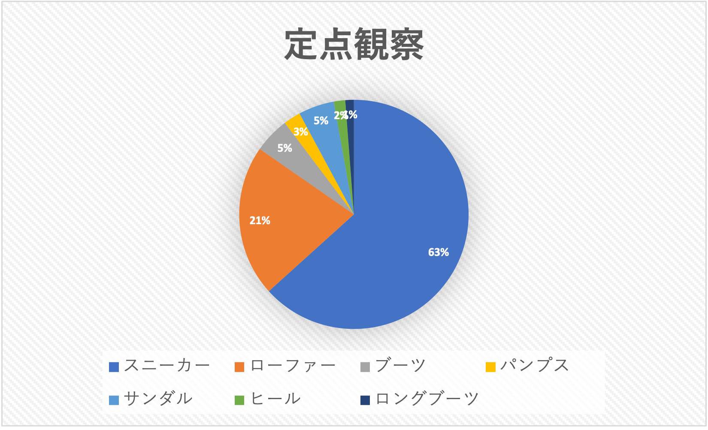
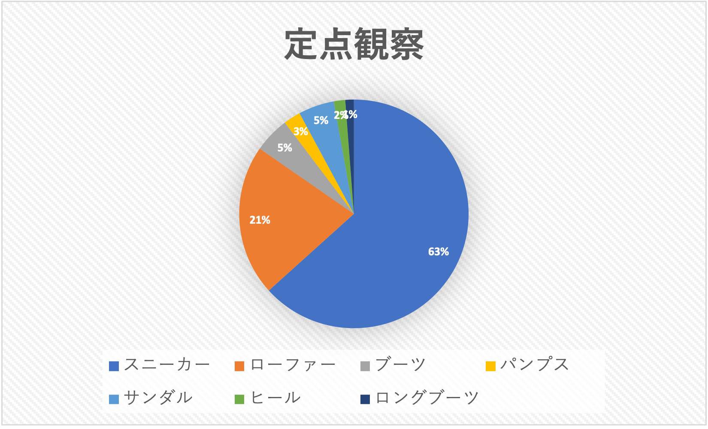

調査概要
日程：10月17日（火）
時間：14:00~14:50
場所：移動観察 神奈川大学みなとみらいキャンパス〜ランドマーク横*1
定点観察 ランドマーク横*1
*1は以下の画像で赤丸がしてあるところ

時間：14:00~14:50
場所：移動観察 神奈川大学みなとみらいキャンパス〜ランドマーク横*1
定点観察 ランドマーク横*1
*1は以下の画像で赤丸がしてあるところ
~注目した点~
- 靴の種類
- 靴の色
調査結果
 

HTMLに関して
~HTMLとは~
Hyper Text Makeup Language の略
Hyper Text: 単なるテキスト（文字）を超えたテキストデータ
Makeup: 目印をつける コンピュータが読み取れるタグをつける
Language: 言語
つまり、「さまざまなデータをコンピュータが読み取れるようにタグ付けする言語」という意味である。
htmlを使用することで、テキストや画像。音声、動画などのコンテンツをWEBページ上に表示することができる。
Hyper Text: 単なるテキスト（文字）を超えたテキストデータ
Makeup: 目印をつける コンピュータが読み取れるタグをつける
Language: 言語
つまり、「さまざまなデータをコンピュータが読み取れるようにタグ付けする言語」という意味である。
htmlを使用することで、テキストや画像。音声、動画などのコンテンツをWEBページ上に表示することができる。
重要な用語ータグ
タグとはテキストに意味を与える目印である
100以上存在するタグの中で、WEB制作の初心者が覚えるべき主な８つのHTMLタグ
100以上存在するタグの中で、WEB制作の初心者が覚えるべき主な８つのHTMLタグ
- aタグ：Webサイトにリンクを貼り付ける
- brタグ：テキスト内や間で開業を行う brはBreak（改行）の略
- divタグ：囲った部分をグループ化する
- hタグ：見出しを表示する
- imgタグ：Webタイト内に画像を表示する
- tableタグ：Webサイト上に表を作成する
- pタグ：一つの段落を指定する
- リストタグ(ul・ol・li)：箇条書きのように表示する
~HTMLを使ったWEBサイトの作り方~
- ツールを用意する
- テキストエディタにhtmlを書く
- テキストエディタを保存する
- ブラウザで確認する
- WEBサイトを公開する
参考文献
【初心者向け】Gitとは何なのか。【絶対理解できる】Gitとは？特徴やできることまとめ！
HTMLとは？CSSとの違いやメリット・デメリット、代表的なタグについても解説